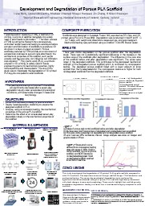

BME405 · Group 18 · Academic poster
Development and Degradation of Porous PLA Scaffold
Group coursework covering scaffold design, FDM fabrication, accelerated degradation, image analysis and compression testing.
Open original poster file ↓Group authorship
Luke Kelly, Lauren McCarthy, Shabeer Ahamed Shagul Hameed, Jin Zhang and Shivani Sivarajan. Specific methods and results belong to the group submission; individual contributions are not assigned here.
